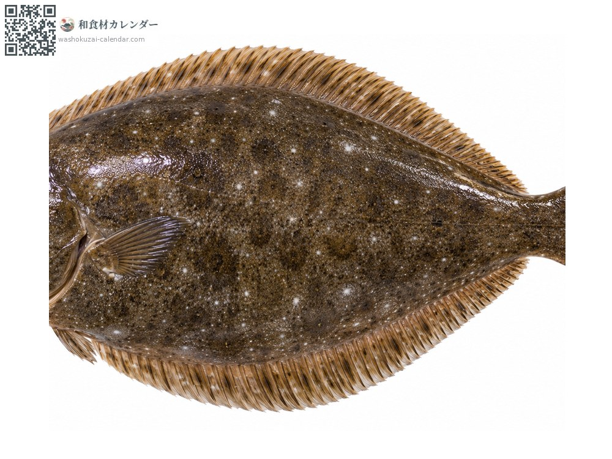
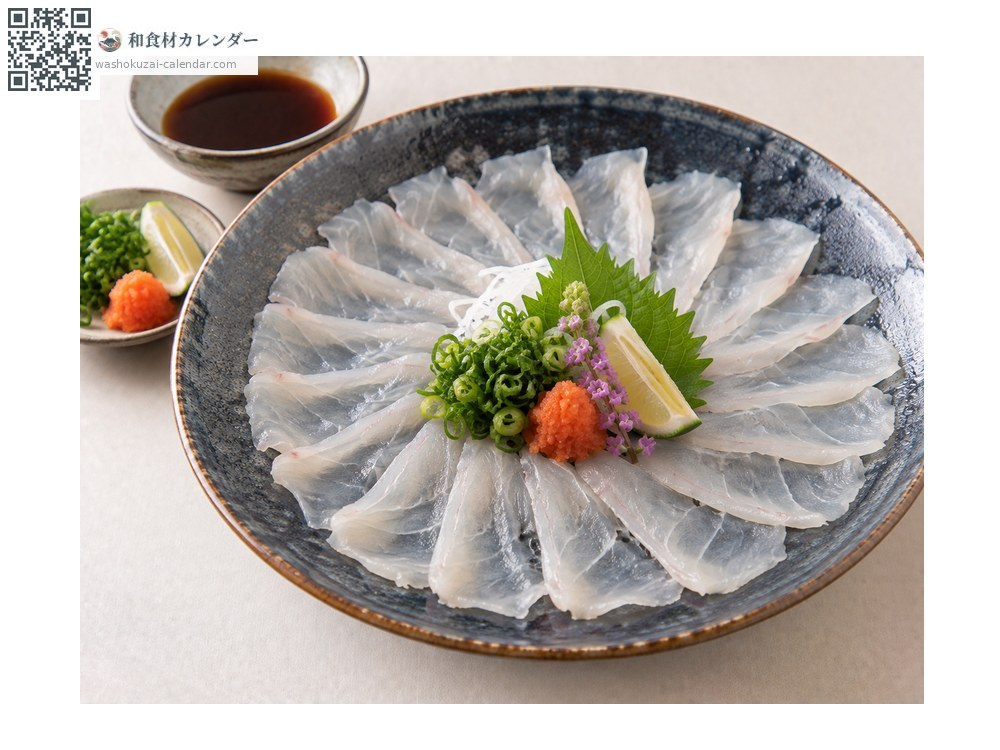
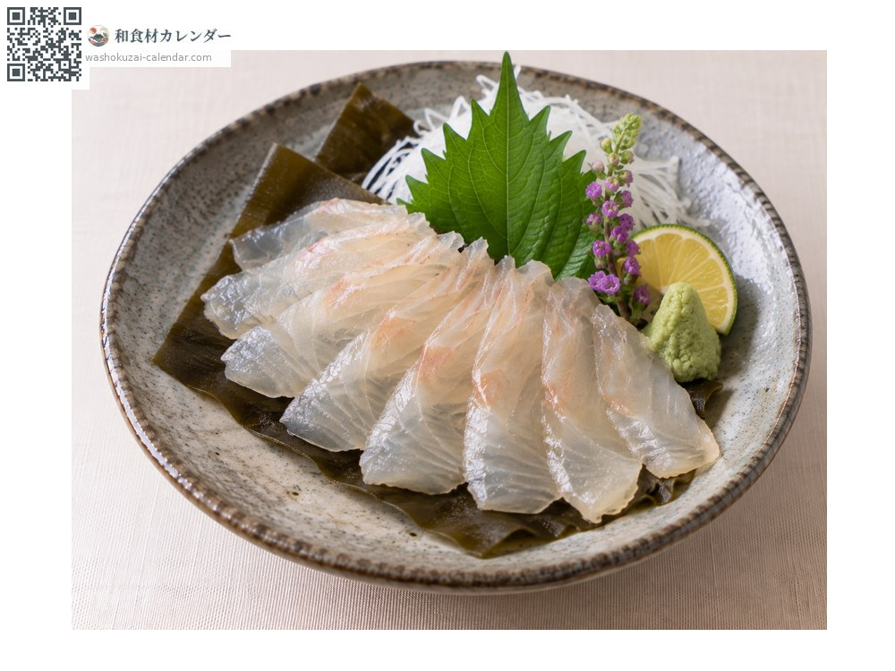
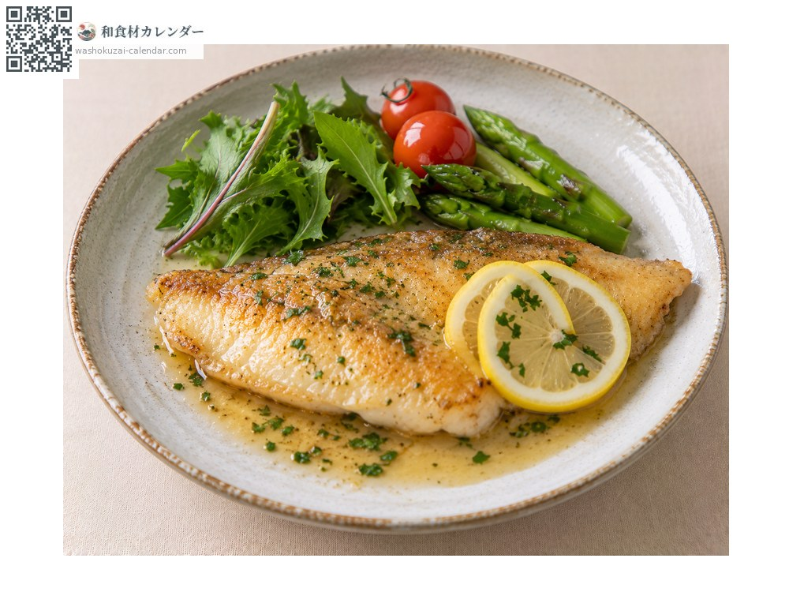
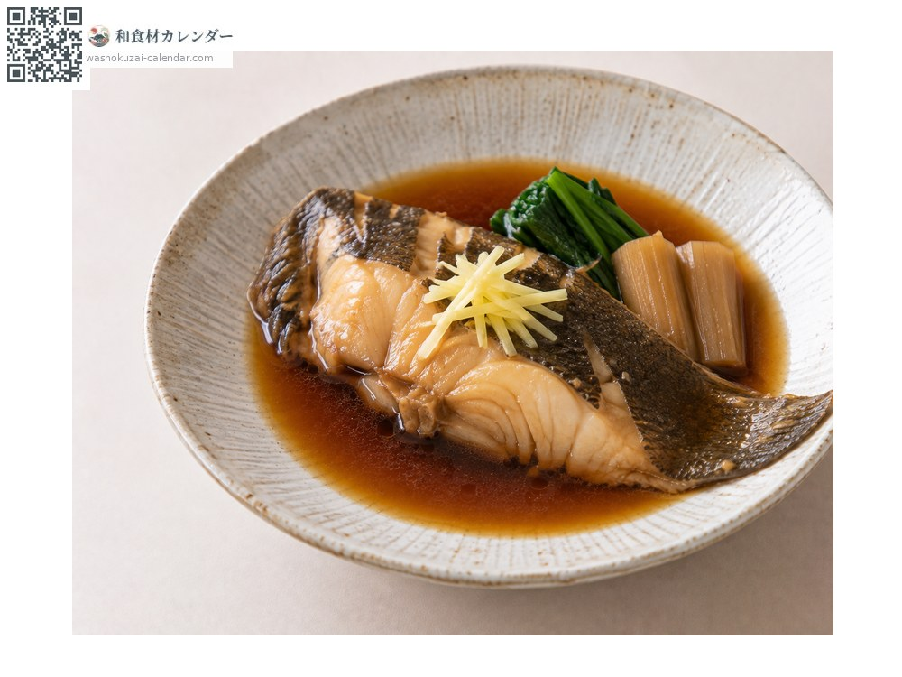

Seafood
Olive flounder
ヒラメ ひらめ hirame
Also known ashirame
At its best in Jan, Feb, Nov, Dec

When it is at its best
Jan
Feb
Mar
Apr
May
Jun
Jul
Aug
Sep
Oct
Nov
Dec
In seasonAvailable
How to cook

Sashimi
Sliced paper-thin. The engawa muscle along the fin is especially rich.

Kobujime (cured between kelp sheets)
Cured overnight with kelp to concentrate the flavour.

Meunière
Pan-fried in butter, which suits the delicate flesh.

Nitsuke (simmered in sweet soy)
Simmered in sweet soy.
How to choose
Thick flesh with a clean white underside, and springy to the touch.
Storage
Fillet, pat dry, wrap and refrigerate. Use within one or two days.
Main areas
Good to know
Winter fish are called kan-hirame, firm and full of flavour. A saying goes that hirame faces left and karei faces right.
At their best around the same time
 Chub mackerel
Chub mackerel Japanese amberjack
Japanese amberjack Pacific bluefin tuna
Pacific bluefin tuna Swordfish and marlin
Swordfish and marlin Yellowback seabream
Yellowback seabream Golden threadfin bream
Golden threadfin bream Spottedtail morwong
Spottedtail morwong Largescale blackfish
Largescale blackfish